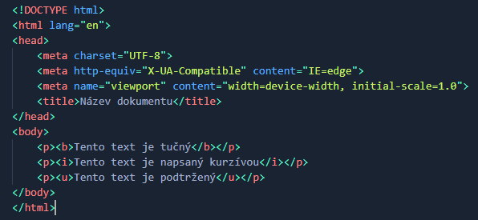
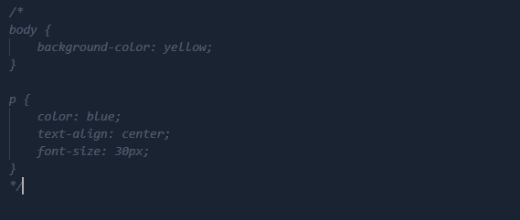

V čem programovat a co je to IDE?
IDE je vývojové prostředí, které usnadňuje práci programátorům
Obsahuje editor zdrojového kódu, kompilátor, případně interpret a většinou také debugger
Jednotlivé IDE
Visual Studio Code - editor zdrojového kódu vyvíjený společností Microsoft pro operační systémy Windows, Linux a macOS. Je jedním z nejpoužívanějších IDE
Atom - vyvíjen společností GitHub, má zabudovanou podporu pro Git a podporu zásuvných modulů naprogramovaných v JavaScriptu
Sublime Text 3 - multiplatformní editor textových souborů a zdrojového kódu, samotný editor není zdarma, ovšem pluginy ano
Úvod do HTML
HTML se skláda ze značek (tagů)
Umožňuje dodávat prvkům na stránce určitý význam
Tagy slouží k tomu, abychom jimi mohli obalovat text a tak mu dávat určitý význam
Je značkovací jazyk, který se používá k vytváření základní obsahové kostry webových stránek
Umožňuje publikaci dokumentů na Internetu
Vznikl v roce 1990
Základní HTML tagy
Jako HTML tagy označují frontendisté a kodéři značky v kódu jazyka HTML či XHTML, které vytváří tzv. HTML elementy
Tagy mohou být párové i nepárové
Párové tagy musí končite stejným tagem, jakým začali, ale musíme přidat lomítko
Zapisují se do hranatých závorek
Začátek HTML souboru
HTML soubor má určitou strukturu
Na začátku musíme určit doctype
Dále definujeme samotný HTML dokument, ten je rozdělen na dvě části - hlavičku a tělo
Hlavička obsahuje informace pro prohlížeče a vyhledávače, tělo poté obsahuje samotný obsah stránky
Tagy pro úpravu textu
<b>: tučné písmo, tag je párový
<i>: text psaný kurzívou, je párový
<u>: podtržení textu, je párový
<font>: styl písma, také je párový
<span>: úsek textu, je párový
<strong>: tučné zvýraznění

Bloky textu
<header>: záhlaví stránky
<footer>: patička stránky
<main>: hlavní obsah stránky
<section>: obsahová sekce např u článku
<nav>: navigační lišta stránky
<p>: odstavec, je párový
<br>: řádkový zlom, je nepárový
<div>: oddíl, kontejner, je párový
<h1> - <h6>: nadpisy různých úrovní, h1 je nevětší, h6 nejmenší, tagy jsou párové
<hr>: vodorovná čára, je nepárový
HTML Seznamy
<li>: položka seznamu
<ol>: čislový seznam
<ul>: odrážkový seznam
<dir>: zvláštní druh seznamu
<menu>: typ seznamu
<dl>: seznam definic
<dt>: definovaný termín
<dd>: definice termínu
HTML obrázky
HTML obrázky se definují pomocí <img> tagu
Tento tag obsahuje zdrojový soubor, náhradní text a výšku a šířku obrázku
<img src="obrazek.png" alt="logo">
Jak připojit CSS
Existuje mnoho způsobů, jak CSS připojit a zde si je ukážeme
Pomocí externího souboru
Nejprve se vytvoří obyčejný textový soubor, např: default.css
Tento externí soubor se připojí k dokumentu následujícím způsobem: <link rel="stylesheet" type="text/css" href="default.css"/>
Tento způsob podporují všechny prohlížeče s podporou kaskádových stylů
Je možné soubor CSS připojit i pomocí importu, to se ale moc nevyužívá
Pomocí interního souboru
Pokud má jedna stránka HTML jedinečný styl, lze použít interní šablonu stylů
Vnitřní styl je definován uvnitř prvku <style>, uvnitř v sekci <head>
Vložené CSS
Vložený styl lze použít k použití jedinečného stylu pro jeden prvek
Chceme-li použít vložené styly, přidáváme atribut stylu k příslušnému prvku. Atribut style může obsahovat libovolnou vlastnost CSS
Úvod do CSS
CSS je anglická zkrátka názvu Cascading Style Sheets, což v překladu znamená tabulky kaskádových stylů
Jde o formátovací jazyk, který popisuje způsob zobrazení stránek napsaných v XML, XHTML či v HTML.
Úkolem CSS je oddělit vzhled dokumentu od samotné struktury a obsahu
Tento formátovací jazyk vznikl kolem roku 1996
Stylování v CSS
Změna barvy textu: p {color: blue}, tento text bude mít modrou barvu
Změna barvy pozadí: body {background-color: yellow}, pozadí bude mít žlutou barvu
Zarovnávat text a obrázky na střed: p {text-align: center}, tento text bude zarovnaný na střed
Měnit velikost textu, nadpisů a obrázků: p {font-size: 30px}, tento text bude mít velikost 30 pixelů
CSS komentáře
Prohlížeče komentáře ignorují
Komentáře se používají k vysvětlení kódu a mohou pomoci při pozdějších úpravách zdrojového kódu
Komentář CSS je umístěn uvnitř CSS souboru a značí se následovně: /*Tohle je komentář v CSS*/
Tento komentář můžeme použít i na okomentování více řádků

CSS selektory
Tato sekce obsahuje všechny druhy selektorů v CSS
Co to jsou selektory
CSS je založeno na tzv. selektorech
Selektory umožňují označit prvky na stránce podle určitých kritérií a potom tyto prvky ostylovat
CSS dokument nemá na rozdíl od HTML žádnou hlavičku a kromě selektorů do něj již není potřeba psát cokoli navíc
Typové selektory
Úplně nejjednodušší je tzv. typový selektor, který na stránce jednoduše vybere všechny elementy daného typu
Budeme-li chtít např.: označit všechny nadpisy h1 na stránce, kód bude vypadat následovně: h1{}
Stylujeme tedy elementy určitého typu, zde h1
Za selektorem následuje blok ze složených závorek, do kterého se píší vlastnosti, podle kterých se mají elementy stylovat.
Třídní selektory
Třídní selektor funguje tak, že některé elementy na stránce zařadíme pomocí atributu class do nějaké třídy
Elementy s tímto atributem se potom ostylují podle toho, jaké vlastnosti daná třída v CSS má
Funguje to tak, že napíšu např.: <p class="nazevTridy">, a poté v CSS mohu stylovat tento text
Za selektorem následuje blok ze složených závorek, do kterého se píší vlastnosti, podle kterých se mají elementy stylovat.
ID selektory
Selektor id používá atribut id prvku HTML k výběru konkrétního prvku
ID prvku je na stránce jedinečné, takže selektor ID se používá k výběru jednoho jedinečného prvku
Chcete-li vybrat prvek s konkrétním ID, napište znak hashtag (#) následovaný ID prvku
Pomocí odkazů <a href=""></a> je možné linkovat různé části stránky
Kontextové selektory
Kontextový selektor je definován jako selektor, který zohledňuje kontext, ve kterém má být styl aplikován
Jednoduše řečeno, určený styl se použije na prvek pouze v případě, že je prvek v určeném kontextu
Kontext lze definovat jako vztah rodič/dítě nebo vztah předek/potomek mezi různými částmi dokumentu
Kontextový volič se skládá ze dvou nebo více jednoduchých voličů oddělených mezerou
Třída, jakýkoli typ, selektor ID je považován za jednoduchý selektor
Skupinové selektory
Selektor seskupení v CSS se používá k výběru více prvků a jejich společnému stylu
To snižuje kód a další úsilí deklarovat společné styly pro každý prvek
Chcete-li seskupit selektory, každý selektor je oddělen mezerou
Kontextový volič se skládá ze dvou nebo více jednoduchých voličů oddělených mezerou
Třída, jakýkoli typ, selektor ID je považován za jednoduchý selektor